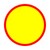

<svg width="100" height="100">
    <circle cx="50" cy="50" r="40" stroke="red"
    stroke-width="4" fill="yellow" />
</svg>
<br>
<svg width="300" height="200">
    <rect 
    stroke="green"
    width="100%"
    height="100%"
    fill="blue" 
    />
</svg>
<br>

<!-- importando ela, funciona o cache de memoria -->